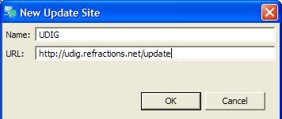
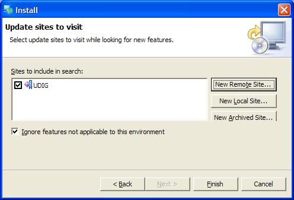

Finding new plugins¶
The update manager provides functionality to search for new features/plugins for udig. To search for new features:
Start the Working with the Update Manager
- Select Search for new features to install option.

Press Next
- If the site you wish to search is not in the list press New Remote Site

- Enter the location and a name for the site

Press OK
- Press Finish

- The new features will appear in a dialog and you can check the features you wish to install

- Agree or disagree to the license (The feature won’t be installed if the license isn’t accepted)

- If there are multiple udig installation select the correct installation and press Finish

- Press Install or Install All

- It is recommended you restart as apply changes doesn’t always work.

The new feature is now installed. All you have to do is figure out how to use it.